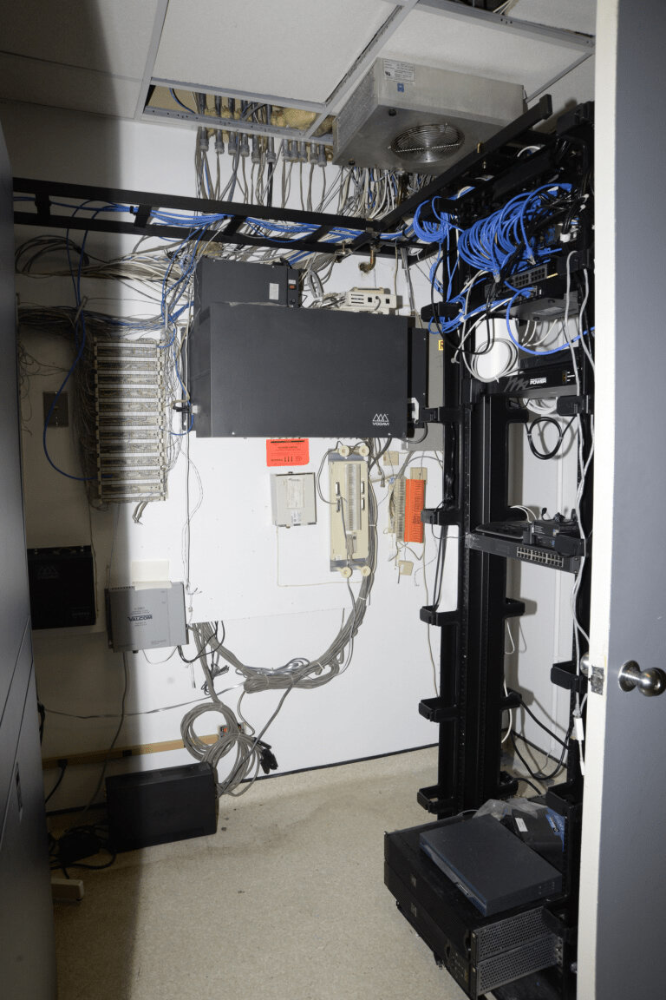

C1 · Work & Career
Shadows in the Server Room
An outage at 2:47 on a Thursday, and the argument the team had been avoiding for six months.
Play the audio and follow along, then read it again on your own. Tap or hover over a highlighted word to see what it means.
The IT floor at TechNova ran on a kind of controlled disorder. Two monitors per desk, cables nobody had ever traced, coffee cups at various stages of abandonment, and the faint smell of hot electronics that anybody who has worked near a server rack recognizes immediately. It was late October in Seattle, raining, and the rain had been going on long enough that people had stopped mentioning it.
Alex Rivera was debugging an API integration that had been failing intermittently for three days, which is the worst kind. Across the aisle, Jamie Patel kept the infrastructure running — firewalls, backups, and the machines in the server room that everything else depended on. His desk was the only tidy one on the floor. Sam Lee tested what the others built, and her desk was the opposite of Jamie's, a landscape of sticky notes in three colors whose system only she understood.
Their manager, Harlan Thompson, had come up through the same job twenty years earlier and had the confidence of somebody who had once been very good at something that had since changed. He managed by walking about and by deadline. His view of infrastructure was that if it was working you left it alone, which had served him well for a decade and had stopped serving him at some point he had not noticed.
The outage began at 2:47.
Alex's screen froze first. He tried the usual things, got nothing, and looked at the status board. The client portal — where TechNova's largest accounts logged in to track shipments and pull their analytics — was not slow. It was down. A ping to the database told him why: the primary cluster had overheated and taken itself offline, and half the network had gone with it.
The email started within ninety seconds. One client asked whether the company understood that it was invoicing week. Another used the word “unacceptable” and mentioned their legal team.
Jamie was already moving. The server room was a converted store cupboard at the back of the floor behind a biometric lock, and inside it the air was warm and the fans were working far harder than fans should have to. He had the diagnostic panel open in under a minute.
“Node 3,” he said, to nobody. “Cooling's failed again. Full restore from backup. Two hours, minimum.”
Back in the open office, Alex put his mouse down harder than he meant to. “Two hours. Jamie, you told me you'd patched the cooling last week. I have been saying for months that we need redundant nodes, and every time the answer is budget.”
It carried further than he intended. Two people from the floor below looked up.
Jamie came out of the server room with his sleeves pushed up and his composure visibly thinner than usual. “Your deploy last night took eighty per cent of the CPU for four hours. I asked you to throttle those queries and you didn't. And neither of us chose to run production on hardware this old.” He did not look at Harlan's office when he said it, which was how everybody knew that was where the sentence was aimed.
Harlan came out anyway.
“What is happening out here? My inbox is on fire. I have just had the VP at Apex on the phone threatening to pull a six-figure contract.” He turned to Jamie. “I signed off on that cooling fix myself. If you had followed the process—”
“The process.” Jamie did not raise his voice, which made it worse. “Harlan, we have been asking for upgrades since June. I sent you a risk assessment in the Q3 review. Thermal throttling. Single points of failure. It is four pages and you have never mentioned it. You cut the hardware budget to pay for the offsite in Tahoe. So no — the clients are offline, we are losing money by the hour, and this is not a mistake I made on Tuesday.”
Alex stood up. “He's right. We have been limping for months. I can't optimise code around a machine that fails on a warm afternoon, and Sam's whole test cycle just became worthless. We are patching holes in a boat that is still taking on water because nobody will say so upstairs.”
Sam, who normally kept the peace, had been quiet long enough to be noticeable. She stood too.
“Shouting will not bring the database back,” she said. “But Harlan — this is the third warning this quarter. Two of them I logged myself. Not acting on them isn't a decision to accept the risk. It's a decision not to look at it.”
The floor went very quiet. People a few desks away typed with great concentration at nothing.
For a few seconds it could have gone either way. Harlan had the look of a man deciding whether to end somebody's afternoon. Then he put his mug down on the nearest desk, harder than necessary, and let out a breath.
“All right,” he said. “You're right. All three of you.”
Nobody said anything, because nobody had prepared for that.
“I've had tunnel vision on the numbers,” he went on. “I've been managing the budget and not the system. This is a wake-up call and I'd rather have it today than in January.” He nodded at the server room door. “We fix it together, and we stop assigning blame until it's back up. Conference room. Now.”
What followed was the most competent hour the department had had in a year, and it was competent because somebody finally wrote things down.
Harlan drew a line down the whiteboard. On the left he wrote Stabilise. Jamie owned the restore, with a status update every fifteen minutes whether or not there was anything to report. Alex would draft the client communication — an apology, a realistic estimate, and waived fees for the affected period, which Harlan authorised on the spot rather than asking. Sam would verify the restore before anything went live, and Harlan said the words “no shortcuts” in a way that was clearly aimed at himself.

On the right he wrote Prevent. A proposal by the end of the following week, from all of them together rather than from him: redundant cooling, a hybrid cloud migration, whatever the evidence supported. He would take the budget fight upstairs and said so in front of everybody, which is a harder thing to walk back than a promise made privately.
Then he added a third line, and this was the one that mattered. A weekly fifteen-minute stand-up for risks only — no project updates, no status theater, only things that could break. And a quarterly session with the C-suite where those risks are flagged directly rather than filtered through him.
“If I'd read that risk assessment in July,” he said, “we would not be here. That's on me. So now it goes where I can't ignore it.”
The database came back at 5:12, twenty minutes ahead of Jamie's estimate, and Sam found two corrupted records in the verification pass that would have caused a much worse problem on Monday. They went live at 5:40. Alex's email went out before the clients had to ask.
The thermal audit that night found that the cooling unit had been failing intermittently since August and had been logging warnings the whole time, to a dashboard nobody had been assigned to read.
That detail is the story, really. Not the overheating, which is ordinary, and not the argument, which was overdue. The system had been telling them for two months, in writing, and the failure was that nobody owned the reading of it. Harlan's third line on the whiteboard — the dull one, the fifteen-minute meeting about things that might break — was the only part of the afternoon that would stop it happening again.
It is also the part most likely to be quietly dropped in about four months, when nothing has gone wrong for a while and the calendar is full. Everybody in that conference room knew it. That is why Sam asked, before they left, who owned the stand-up if Harlan was traveling — and why it mattered that he answered.
Key Vocabulary
- controlled disorder a mess that works, and that the people in it understand
- intermittently happening sometimes and not others, with no obvious pattern
- backup a stored copy of data, kept so it can be recovered
- firewall a system that filters traffic in and out of a network
- outage a period when a service is unavailable
- to ping to send a quick signal to check whether a machine is reachable
- cluster a group of servers working together as one system
- node a single machine within a cluster or network
- to restore to rebuild a system or its data from a backup
- redundant duplicated on purpose, so that one failure does not stop everything
- to deploy to release new code into the live system
- to throttle to deliberately slow something down to stop it overloading a system
- single point of failure a part whose failure brings the whole system down
- to sign off on to approve something formally
- to cut a budget to reduce the money available
- offsite a company trip away from the office, usually for team-building
- to be limping to keep working, but badly and at risk
- to take on water to be sinking — said of a boat, and of anything failing slowly
- to keep the peace to stop other people from arguing
- tunnel vision focusing on one thing so hard that everything else disappears
- wake-up call an unpleasant event that forces you to see a problem
- to own something to be the person responsible for it, by name
- to walk something back to retreat from a position you have already stated
- stand-up a short standing meeting, kept brief on purpose
- status theater reporting that exists to look busy rather than to inform anyone
- C-suite the most senior executives of a company
- to flag to raise something formally so that it is on record
- corrupted damaged so that the data can no longer be read correctly
- dashboard a screen showing the current state of a system at a glance
- overdue later than it should have been
Shadows in the Server Room — C1 · Work & Career · Renan the Teacher, English Language Academy · https://renangrossi.github.io/englishclasses/reading/c1/shadows-in-the-server-room.html
Interactive Exercises
Practice
Complete each exercise, then click Submit to see your score and an explanation for every answer.
Speaking & Writing
Discussion
There are no right answers here — use these to practice speaking, or write a short answer to each.
- Sam says not acting on a warning is “a decision not to look at it” rather than a decision to accept the risk. Is that fair to Harlan?
- Harlan changes his mind in public, in front of people who have just criticized him. How rare is that where you work, and what makes it possible?
- The warnings existed for two months and nobody was assigned to read them. What is going unread in a system you rely on?
- The writer predicts the risk stand-up will quietly be dropped in four months. What would stop that happening?
- Alex, Jamie, Sam and Harlan all have a share of the blame. Divide it, and defend how you divided it.
- Write about 250 words describing something that went wrong at work, in the order it happened, ending with the one change that would prevent it recurring.